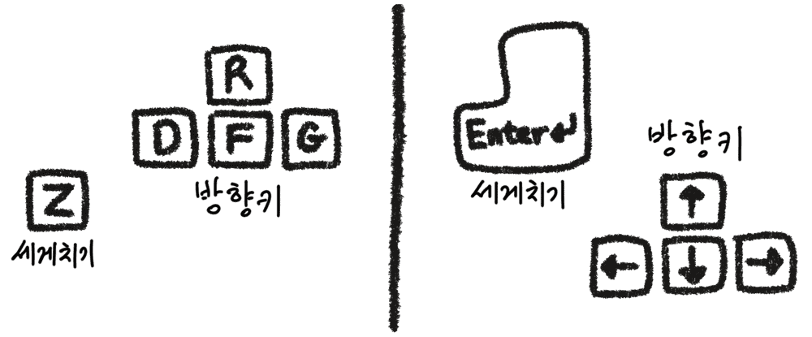

피카츄 배구는 일본에서 1997년에 만들어진 윈도우용 게임입니다. 이 웹
페이지에서 다른 사람과 P2P 연결을 맺어 피카츄 배구를 온라인으로
플레이할 수 있습니다.
최신 버전의 브라우저 이용을 권장합니다. 최신 버전의 크롬,
파이어폭스, 사파리 브라우저에서 플레이 가능한 것을 확인했습니다.
인터넷 익스플로러는 지원하지 않습니다.
유의사항: 다음의 경우에는 이 P2P 온라인
버전의 이용이 불가능합니다. (이 P2P 온라인 버전이 이용하는 기반
기술인
WebRTC가
P2P
연결을 맺어주지 못하는 경우들입니다.)
WebRTC의 작동을 차단하는 브라우저 확장 프로그램을 사용 중인 경우
WebRTC의 작동을 차단하는 VPN 서비스를 사용 중인 경우
네트워크가 (회사, 학교, 관공서 등의) 방화벽 하에 있어 UDP 포트들이
막혀있는 경우
네트워크가
symmetric NAT
하에 있는 경우 (한 가지 예로, 3G, 4G 또는 LTE 셀룰러 네트워크가
보통 이에 해당합니다.)
아래의 "네트워크 검사하기" 버튼을 눌러, 위 두 가지 사항의 해당
여부를 확인할 수 있습니다.
조작법: 다음 중 편한 쪽을 사용하면
됩니다. (스마트폰이나 태블릿의 경우, 블루투스 키보드가 필요합니다.)

리플레이: "리플레이 저장" 버튼(게임 화면
상단에 나타납니다)을 누르면, 게임 시작부터 해당 버튼을 누른
순간까지가 리플레이 파일로 저장됩니다. 저장한 리플레이 파일을
리플레이 재생기로 재생할 수 있습니다.
설정: 적용하기 원하는 설정에 체크
표시하면 됩니다.
알림 소리:
상대방과 연결 성공/실패 시, "피카츄~"
퀵 매치 그룹: 동일한 매치 그룹을 선택한
플레이어끼리 퀵 매치가 성사됩니다. 상대방과의 물리적 거리가
가까울수록 게임 플레이가 더 원활할 가능성이 높습니다.
닉네임: 아래에서 닉네임을 설정할 수
있습니다. (기본 닉네임은 "플레이어"입니다.) 중복 검사가 없습니다!
따라서
같은 닉네임을 사용한다고 해서 같은 사람이라는 뜻은
아닙니다.
닉네임 아래 앞 부분 일부가 표시되는 공인 IP 주소를 보면, 퀵 매치에서
만나는 사람들을 어느 정도는 식별할 수
있습니다.
방장 - "방 만들기" 버튼을 누른 후,
만들어진 방 ID를 같이 온라인으로 플레이할 친구("방장의 친구")에게
보냅니다. 컴퓨터에서 쉽게 복사 붙여넣기 할 수 있도록 카카오톡 등의
메신저로 보내거나 이메일로 보내면 편리합니다.
방장의 친구 - 메신저 또는 이메일 등으로
받은 방 ID를 "방 들어가기" 버튼 왼편에 있는 텍스트 박스에 복사
붙여넣기 합니다. 그리고 "방 들어가기" 버튼을 누릅니다. 이제 연결이
시작됩니다.
유의사항: 정상적인 경우 "방장의 친구"가
"방 들어가기" 버튼을 누르고 나서 약 5-10초 이내로 연결이
이루어집니다. 이보다 오래 지나도 게임이 시작되지 않는다면 연결이
실패한 것입니다.
방 ID:
연결 로그:
퀵 매치를 시작하려면,
엔터(Enter) 키 또는 Z 키를 누르세요.
(키보드가 연결되지 않은 장치의 퀵 매치 참가를 방지하기 위한 것입니다.)
매치 그룹을 선택하세요.
동일한 매치 그룹을 선택한 플레이어끼리 매치가 성사됩니다. 상대방과의
물리적 거리가 가까울수록 게임 플레이가 더 원활할 가능성이 높습니다.
(괄호 안에 표시된 키보드 단축키로도 선택할 수 있습니다. 예를 들어,
"한국"을 선택하려는 경우, K 키를 누르면 됩니다.)
입문자 팁:
한국에 거주하신다면, 일단 "한국"을 선택해보기를 권장합니다.
"한국" 그룹을 선택할 때 일반적으로 매치 성사가 가장 잘 됩니다.
매치 그룹 ""에서
성사된 매치 수
최근 24시간:
최근 1시간:
최근 10분:
퀵 매치 로그:
퀵 매치 서버와 통신한 횟수:
0
연결 로그:
피카츄 배구를 하러 누군가 오기를 기다리는 중...
함께 게임할 상대방을 찾았습니다. (이 메시지가 표시되고서 약 20초가
지나도 게임이 시작되지 않으면, 연결에 실패한 것입니다.)
함께 게임할 상대방을 찾았습니다. 3초 후에 연결을 시작합니다.
상대방과 연결하고 있는 중입니다. (이 메시지가 표시되고서 약 20초가
지나도 게임이 시작되지 않으면, 연결에 실패한 것입니다.)
(1) 필요한 server reflexive candidate를 얻을 수 있거나, 컴퓨터에 공인
IP 주소가 할당되어 있습니다. (UDP 포트가 열려 있습니다.)
(2) 네트워크가 symmetric NAT 하에 있지 않습니다.
이 P2P 온라인 버전을 이용할 수 없습니다. server reflexive candidate를
얻을 수 없고 host candidate 또한 얻을 수 없습니다. 이 P2P 온라인
버전이 이용하는 기반 기술인 WebRTC가 브라우저에서 작동하지 않는 것으로
보입니다. 다음 사항을 확인해주시기 바랍니다.
브라우저를 확인해주세요. 최신 버전의 크롬, 엣지, 파이어폭스 또는
사파리 브라우저를 이용하시기 바랍니다.
브라우저에 확장 프로그램(또는 플러그인)을 설치했다면, 그 중 일부가
WebRTC의 작동을 차단하고 있는 것일 수 있습니다. 확장 프로그램(또는
플러그인)을 사용 중지하거나 삭제한 후 다시 시도해보세요.
VPN을 사용하고 있다면, VPN을 끈 후에 다시 시도해보세요.
위의 제안들을 모두 확인하고 적용했는데도 문제가 해결이 안 된 경우,
다른 브라우저를 사용해 보시기 바랍니다. 현재 크롬을 사용하고
있다면, 엣지 또는 파이어폭스를 사용해보세요.
이 P2P 온라인 버전을 이용할 수 없습니다. 다음 두 가지 경우 중 하나에
해당합니다. 일단 (1)에 해당하는 조치를 취할 수 있습니다.
(1) 브라우저를 최신 버전으로 업데이트할 필요가 있습니다. 브라우저의
버전이 아래에 표기된 버전 이상이어야 합니다.
(2) 브라우저가 (1)에 표기된 버전 이상이라면, 게임 실행에 필요한 UDP
포트들이 막혀있는 것이 원인일 가능성이 높습니다. 만약 회사, 학교, 또는
관공서에서 접속하셨다면 해당 기관의 방화벽이 UDP 포트들을 차단하고
있는 것일 수 있습니다.
이 P2P 온라인 버전을 이용할 수 없습니다.
필요한 server reflexive candidate를 얻을 수 없습니다. UDP 포트들이
막혀있는 것이 원인일 가능성이 높습니다. 만약 회사, 학교, 또는
관공서에서 접속하셨다면 해당 기관의 방화벽이 WebRTC가 작동하는데
필요한 UDP 포트들을 차단하고 있는 것일 수 있습니다.
이 P2P 온라인 버전을 이용할 수 없습니다.
네트워크가 symmetric NAT 하에 있습니다.
타 사이트 상에서 피카츄 배구 P2P 온라인을 실행하고 있는 것 같습니다.
다음 주소로 직접 방문하면 광고 없는 쾌적한 환경에서 플레이할 수
있습니다.